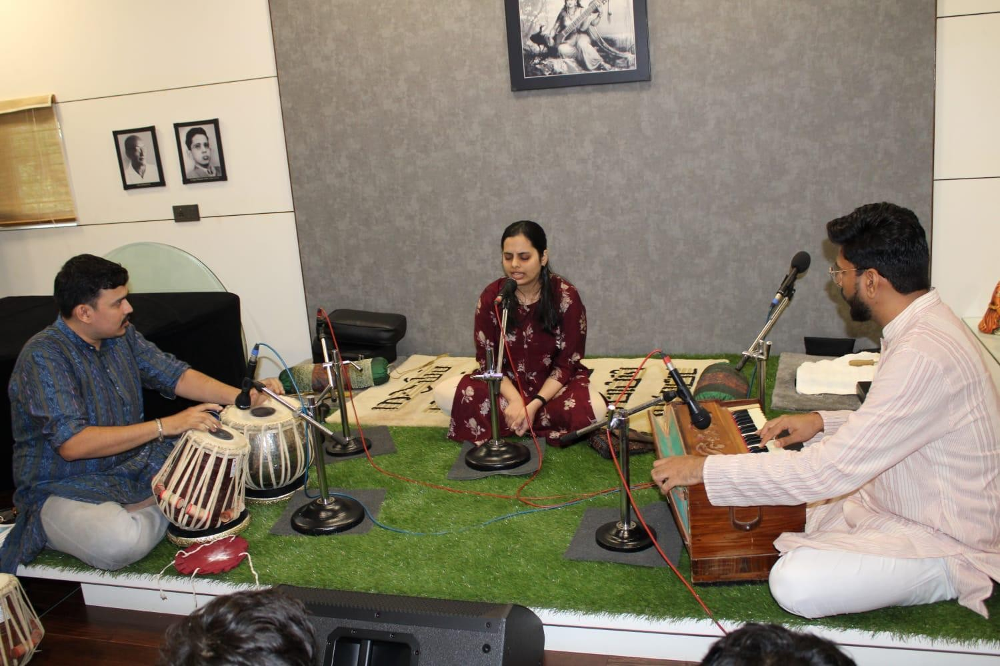
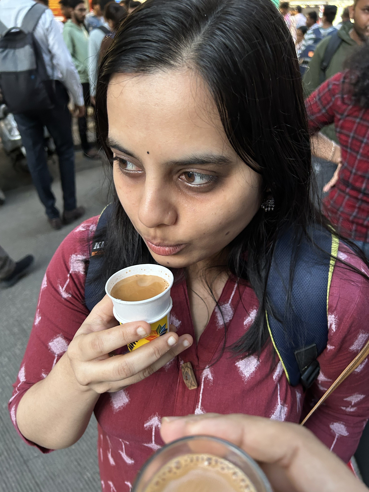
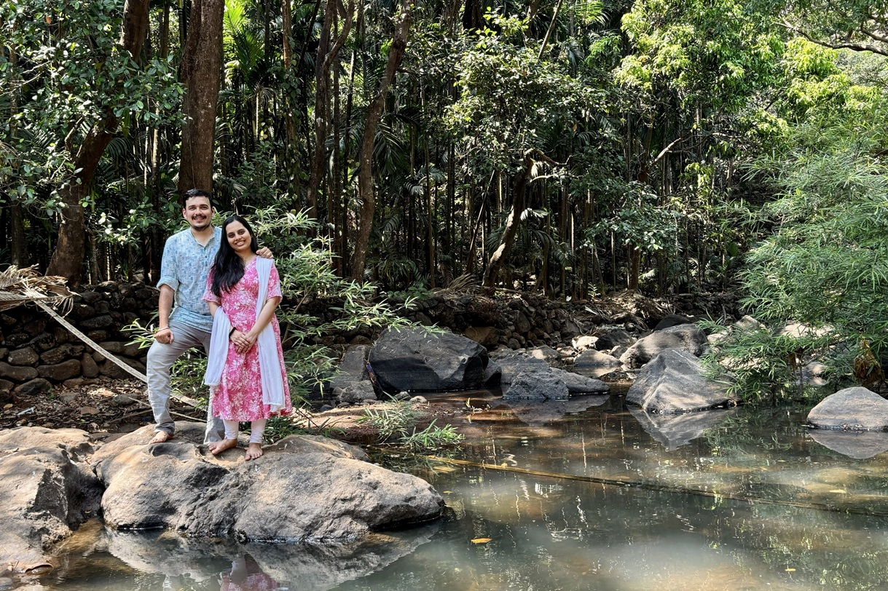
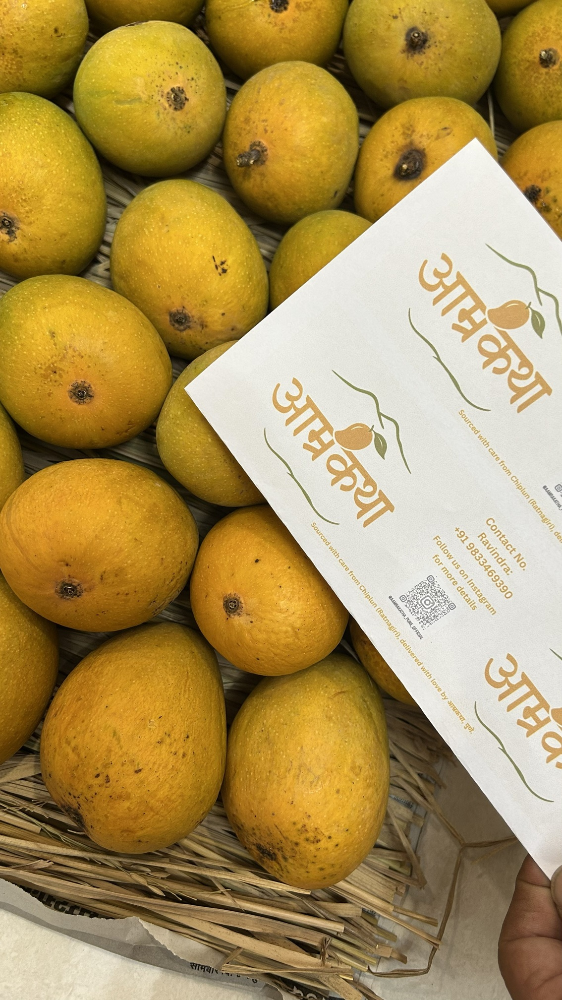

(एक छोटीशी नोंद: आम्ही दोघेही 'भाईंचे' (पु. ल. देशपांडे) निस्सीम चाहते आहोत. आमची कला आणि आमचं जगणं त्यांच्या साहित्याने खूप समृद्ध केलंय. म्हणूनच, आमच्या आयुष्यातली ही सर्वात सुंदर गोष्ट त्यांच्याच शैलीत मांडण्याचा हा आमचा एक भावपूर्ण प्रयत्न. यात त्यांचा कोणताही अनादर करण्याचा आमचा हेतू नाही, तर ही त्यांना दिलेली एक छोटीशी आदरांजली आहे.)
गोष्ट एका आम्रकथेची
रसिक हो, सप्रेम नमस्कार!
पुण्यात एखादी सुरेल मैफल रंगलेली असो, आणि तिथे मी—म्हणजे तुमचा 'भाई' (पु. ल.)—हजर नाही, असं कधी होईल का? सदेह नसलो तरी, जिथे सच्चा सूर आणि लयीचा खेळ रंगतो, तिथे मी कुठेतरी रेंगाळत असतोच! पं. वसंतराव मराठ्यांच्या त्या मैफिलीत जेव्हा या निवेदिताचे सूर आणि आपल्या समीरच्या तबल्याची 'सम' पहिल्यांदाच एकत्र आली, तेव्हाच माझ्या लक्षात आलं होतं... ही नुसतीच गाण्याची साथ नाही, ही तर जन्मभराची संगत आहे! आता या दोन जिवांनी लग्नाच्या बोहल्यावर चढायचं ठरवलंय. तेव्हा म्हटलं, यांच्या या 'आम्रकथे'ची नांदी माझ्याच शब्दांत करूया.
ऐका तर मग...
June 2024
मैफिलीतली 'सम'
मंडळी, तसा हा सगळा योगायोगाचा खेळ! पं. वसंतराव मराठे ऊर्फ आपल्या मराठे दादांची मैफल रंगली होती. तिथे या मुलीचे गाणं आणि आपला हा पठ्ठ्या तबल्याला साथीला. कमाल बघा, त्या दिवशी या दोघांच्यात एकही शब्द दुहेरी झाला नाही. पण गाण्यातली 'सम' आणि दोघांची 'वेव्हलेंग्थ' पहिल्याच फटक्यात अशी काही अचूक जुळली, की पुढच्या 'आम्रकथेची' नांदी तिथेच झाली होती!

July 2024
इन्स्टाग्राम ते टिळकचा चहा
आता जुलै महिन्यात दादांच्या गुरुपौर्णिमेला समीरचा तबला सोलो झाला आणि या आजच्या जमान्यातल्या 'इन्स्टाग्राम'वरून निवेदिताचा मेसेज आला—'Your performance was brilliant'. बस! तिथून जो काही संवादाचा आलाप सुरू झाला... मग विचारता सोय नाही. यांचा वीकली रियाज़ कधी टेकडीवरच्या मॉर्निंग वॉकमध्ये आणि 'टिळकच्या' चहाच्या कपावर रेंगाळू लागला, हे या दोन वेड्या जिवांनाही कळलं नाही.

The Turning Point
चिपळूणची वारी आणि 'आम्रकथा'
खरा टर्निंग पॉईंट आला तो महाशिवरात्रीला. भिले, चिपळूणला निवेदिताच्या घरी समीरचं जाणं झालं आणि तिथे काकांसोबत हापूस आंब्यांवरून रंगलेल्या गप्पांतून चक्क एक भन्नाट आयडिया क्लिक झाली—'आम्रकथा'! आता पुण्यात आंब्याच्या पेट्या पोहोचता-पोहोचता मोडक आणि केतकर या दोन्ही कुटुंबांचं बाँडिंग मात्र एकदम घट्ट होऊन गेलं. आंब्याच्या गोडीने नात्यातही गोडवा आणला म्हणायचा!


June 2025
मुक्काम पोस्ट: आम्रबन
हळूहळू एकमेकांना भेटण्याची नवी कारणं शोधली जाऊ लागली. कधी रियाज़, तर कधी चक्क हॉस्पिटलच्या वाऱ्या! शेवटी प्रपोजलचा तो दिवस उजाडला आणि जूनमध्ये दोघांच्याही मनातला होकार शब्दांत आलाच. आमच्या गुरुबंधूंना याची आधीच चाहूल लागली होती म्हणा. आता पुण्यात जुळलेले हे सूर आणि सुरू झालेली ही 'आम्रकथा', एका सुंदर योगायोगाने थेट 'आम्रबन'मध्ये लग्नाच्या मंडपात जन्मभरासाठी मुक्कामाला पोहोचणार आहे. तथास्तु!
माणसांच्या या गर्दीत, जेव्हा असे दोन सुरेल जीव एकमेकांना गवसतात, तेव्हा वाटतं... जगातली सगळीच लय अजून बिघडलेली नाही; अजूनही खूप काही सुंदर शिल्लक आहे! समीर आणि निवेदिताची ही 'आम्रकथा' आता एका पवित्र बंधनात अडकणार आहे. तुमच्या या 'भाई'चा आशीर्वाद या दोन वेड्या जिवांच्या पाठीशी आहेच आणि सदैव असणार आहे! पण रसिकहो, कोणतीही मैफल तुमच्या दाद आणि आशीर्वादांशिवाय पूर्ण कशी होईल? या नव्या प्रवासाला निघताना त्यांना तुमच्या आशीर्वादांची शिदोरी हवी आहे. तेव्हा नक्की या... ही मैफल तुमच्याविना अधुरी आहे.
— तुमचा, पु. ल.